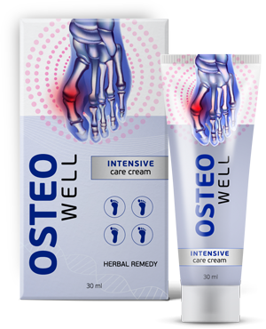
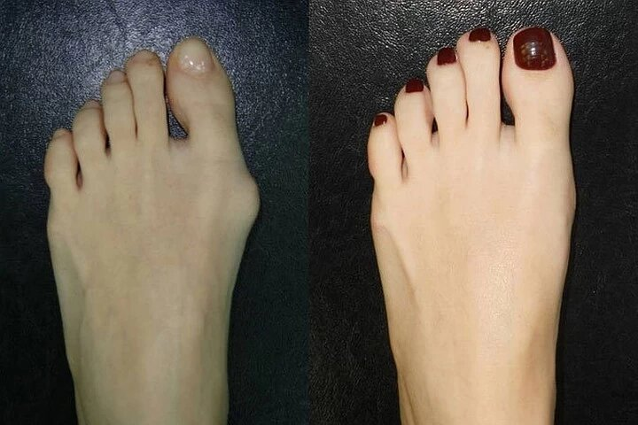

Профилактика и лечение подагры
Обычно для профилактики подагры врачи назначают диету. В первую очередь в рационе необходимо уменьшить количество пищи, при переваривании которой образуется большое количество мочевой кислоты. Но людям с травмами суставов, лишним весом, вредными привычками, малоподвижным образом жизни и генетически предрасположенным – диета не поможет. Наличие характерных кристаллических уратов в суставной жидкости и тофусов рано или поздно вызовет острый приступ подагры. Поэтому необходимо медикаментозное воздействие.
Препараты для лечения острых приступов подагры не предотвращают будущие приступы и не снижают уровень мочевой кислоты, а антибиотики и стероиды могут стать причиной сердечной и почечной недостаточности.
Для предотвращения острой подагры, а также осложнений после приступов, немецкие ученые создали нестероидный крем, способный блокировать производство мочевой кислоты и восстанавливать суставы, пораженные подагрой.
Исследование показало, что крем
Osteowell эффективен как при начальных признаках, так и при хронической подагре. Крем снимает острую боль, отеки и покраснения в течение часа, не давая возникать повторным приступам. Больные, которые пользовались кремом в течение 14 дней, отметили отсутствие повторных кризов.
Что касается лабораторных исследований, то на 2 неделе использования,
баланс мочевой кислоты приближается к норме. Что говорит о снижении количества образованной печенью мочевой кислоты и выведение её почками.

Крем Osteowell избирательно действует на ксантиноксидазу – фермент, который участвует в формировании мочевой кислоты. Благодаря этому поддерживается ее нормальный уровень. Кроме того, крем помогает выводить из организма соли.
После курсового применения у больных снижается уровень мочевой кислоты в крови, уменьшается выраженность суставного синдрома, улучшаются показатели функции почек и иммунологические характеристики, поскольку происходит блокирование канальцевой реабсорбции. Лечение кремом
Osteowell сводит к минимуму риск возникновения подагрических приступов.

В 80% случаев, при излишках мочевой кислоты, сначала поражается сустав первого пальца ноги. Подагра – системное заболевание, и со временем, кроме большого пальца, она распространяется и на суставы пальцев, запястья, локтей, коленей и голеностопа.
Как часто вы испытываете неприятные и болезненные ощущения в области суставов? Вам стало сложно подобрать удобную обувь? Чувствуете ограничение движений? Не откладывайте лечение и не давайте прогрессировать болезни.
Комментарии (10)